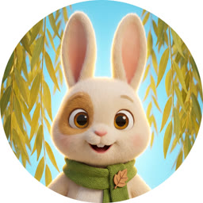
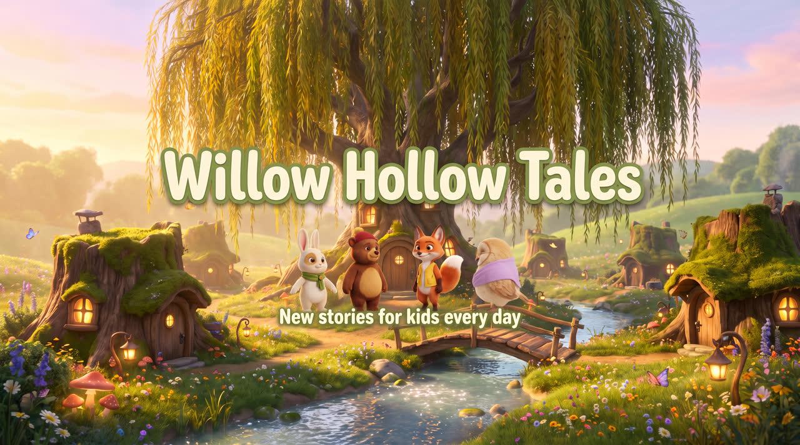

Willow Hollow Tales
Welcome to Willow Hollow, a cozy little valley where Pip the Bunny, Bramble the Bear, Fern the Fox and wise Grandma Owl discover something new every day. Our stories for children aged 3 to 8 are about kindness, sharing, courage, feelings, friendship, good habits and the wonders of nature. Every story ends with a simple question to talk about together.
Watch on YouTubeWillow Hollow Uploader is the internal production tool of the Willow Hollow Tales channel. It is used only by the channel owner to upload, schedule and organise our own videos, thumbnails and playlists on our own YouTube channel through the YouTube API Services. It is not offered to other users and does not access anyone else's data.
Read our Privacy Policy and Terms of Service.